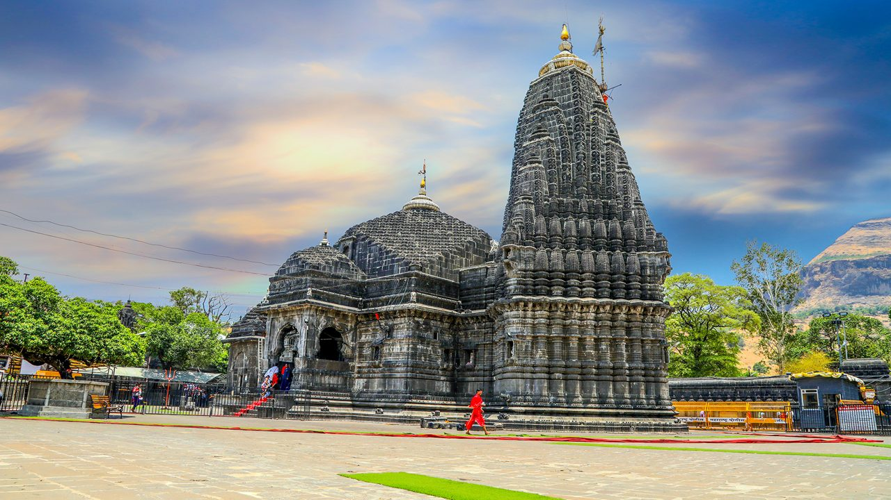

Ugratara Temple

Trimbakeshwar Shiva Temple
rimbakeshwar Shiva Temple (श्री त्र्यंबकेश्वर ज्योतिर्लिंग मंदिर) is an ancient Hindu temple in the town of Trimbak, in the Trimbakeshwar tehsil in the Nashik District of Maharashtra, India, 28 km from the city of Nashik and 40 km from Nashik road.[1][2] It is dedicated to the Hindu god Shiva and is one of the twelve jyotirlingas where the Hindu genealogy registers at Trimbakeshwar, Maharashtra are kept. The origin of the sacred Godavari River is near Trimbak.[3] Several Hindu rituals are carried out in Trimbakeshwar, for that pilgrims travel from all over India.
The Kusavarta kunda (sacred pond) in the temple premises, built by Shrimant Sardar Raosaheb Parnerkar, who was the Fadnavis of Indore State, is the source of the Godavari River, the second longest river in India. A bust of Sardar Fadnavis and his wife can be seen on the edge of the kunda. The current temple was built by Peshwa Balaji Baji Rao after it was destroyed by Mughal ruler Aurangzeb.[4]
Architecture
The temple is located between three hills
Brahmagiri
Nilagiri and
Kalagiri.
The temple has three lingas (an iconic form of Shiva) representing:
Shiva,
Vishnu and
Brahma.
The temple tank is called Amritavarshini, which measured 28 m (92 ft) by 30 m (98 ft). There are three other bodies of water, namely:
Bilvatirtha,
Viswanantirtha and
Mukundatirtha.
There are images of various deities, namely,
Ganga,
Jaleswara,
Rameswara,
Gautameswara,
Kedarnatha,
Rama,
Krishna,
Parashurama and
Lakshmi Narayana.
The temple also has several monasteries and samadhis of saints.
Jyotirlinga
As per the Shiva Purana, once Brahma (the Hindu God of creation) and Vishnu (the Hindu God of preservation) had an argument in terms of supremacy of creation.[6] To test them, Shiva pierced the three worlds as a huge endless pillar of light, the jyotirlinga. Vishnu and Brahma split their ways to downwards and upwards respectively to find the end of the light in either direction. Brahma lied that he found out the end, while Vishnu conceded his defeat. Shiva, then assumed his true form and cursed Brahma that he would have no place in ceremonies while Vishnu would be worshipped till the end of eternity.
The jyotirlinga is the supreme partless reality, out of which Shiva partly appears. The Jyotirlinga shrines, thus are places where Shiva appeared as a fiery column of light.[7][8] Originally there were believed to be 64 jyotirlingas, while 12 of them are considered to be very auspicious and holy.[6] Each of the twelve jyotirlinga sites take the name of the presiding deity - each considered different manifestation of Shiva.[9] At all these sites, the primary image is lingam representing the beginningless and endless Stambha pillar, symbolizing the infinite nature of Shiva.
The twelve jyotirlingas are:
Somnath at Veraval in Gujarat,
Mallikarjuna at Srisailam in Andhra Pradesh,
Mahakaleswar at Ujjain in Madhya Pradesh,
Omkareshwar in Madhya Pradesh,
Kedarnath in Himalayas,
Bhimashankar in Maharashtra,
Viswanath at Varanasi in Uttar Pradesh,
Triambakeshwar in Nashik in Maharashtra,
Vaidyanath at Deoghar in Jharkhand,
Nageshwar Temple at Dwaraka in Gujarat,
Rameshwar at Rameswaram in Tamil Nadu and
Grishneshwar at Aurangabad in Maharashtra.
Shiva showed himself as a Jyotirlinga on the night of the Aridra Nakshatra. It is believed that a person can see the Jyotirlingas as columns of fire piercing through the earth when he reaches a higher level of spiritual attainment. Each Jyotirlinga site takes the name of the presiding deity. Basically, the Jyotirlinga signifies the infinite nature of Shiva. At the highest level, Shiva is regarded as formless, limitless, transcendent and unchanging absolute Brahman and the primal Atman (soul, self) of the universe.